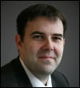
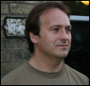
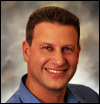

About JCP
Get Involved
Community Resources
Community News
FAQ
Contact Us
About JCP
Get Involved
Community Resources
Community News
FAQ
Contact Us

|
|
Java Community Process: Executive Committee Elections Nominees for 2013

|
The 2013 Fall Executive Committee Elections have started. This year, as defined in the Appendix B of the JCP 2.9 Process Document, all of the seats are open for re-election. The three Ratified and two Elected Seats will be eliminated, reducing the EC to a total of 25 members - 16 Ratified Seats, 8 Elected Seats and one permanent seat held by Oracle America, Inc.
We hosted a Meet the JCP Executive Committee Candidates conference call on Thursday, 10 October at 9:30AM PDT. The recording is available on the JCP Multimedia Page.
You can now view the 2013 Executive Committee statistics on voting and participation.
Please refer to Java Community Process EC Elections for more information on the Executive Committee elections.
Please refer to Executive Committee Information for more information on the current Executive Committee.
What follows are the qualification statements of the candidates for the Executive Committee, along with a brief biography of the person who would serve as the Member's representative on the Executive Committee if elected, and a position paper when one was provided.
| 2013 EXECUTIVE COMMITTEE RATIFIED ELECTION SEAT CANDIDATES
|
Credit Suisse
|
Credit Suisse is a global bank headquartered in Zurich, serving clients in private banking, wealth management, and investment banking. The bank has 530 offices and 22 booking centers located in over 50 countries. From the 46000 employees, around 10000 IT specialists work in application and infrastructure IT departments, in roles ranging from architecture, development, and operations.
In 2010, Credit Suisse was elected in the JCP SE/EE Executive Committee to be the first member to represent the customers of Java technology. Customers want strong and open standards to secure their investments and to choose among a variety of different products.
During the first two terms in the JCP Executive Committee, we showed a good record of participation in the EC Meetings and reviewed the JSRs as part of the technology government service. Having a long tradition in the development of Java EE specifications, we managed to increase our participation in both Java SE and EE Expert Groups as well as Specification Leads.
During our next term, we would like to work on the following topics.
- Bring in our customer view and argue for strong, open and stable standards that can be implemented by any vendor or Open Source community for a competitive market, transparent license models, and easy JCP participation.
- Focus on technology governance and bring in our expertise in standardization and architecture governance. Continue to intensify content-wise JSR reviews within our internal Java community to reflect in the ballots the technical evolution of the Java platform.
- Continue our strong and active participation in Expert Groups and as Spec Leads, e.g., for the development, management, and operations of enterprise-scale applications in the cloud.
Credit Suisse Position Statement (.pdf file)
|

Susanne Cech Previtali
|
The primary representative Susanne is member of Infrastructure Architecture of Credit Suisse and is responsible for the Java Application Platform (JAP) and Java related technologies. Her main focus is the identification and standardization of new technologies that aid the development and operations of large-scale applications. Susanne was the alternate in 2010 and has been the primary representative for the last 2.5 years. Prior to joining Credit Suisse, Susanne obtained a PhD in Computer Science from ETH Zurich where she implemented a dynamic updating system for Java programs.
|

Scot Baldry
|
Scot Baldry is a Managing Director and Technical Fellow of Credit Suisse in the IT division, based in London. He is Head of Investment Banking IT Strategy & Architecture. Scot's specialist technical areas are Software Development and Software Engineering, Automated Testing and Software Correctness, Enterprise Architecture, Technology Strategy and Developer Efficiency and Tooling. In addition Scot has previously served on the ISDA FpML Architecture Working Group focusing on the structure and implementation of the FpML standard and served on the JCP EC from 2010-12 whilst working at Goldman Sachs. Scot holds a Bachelor's degree in Computer Science from the University of Southampton.
|
| | |
Ericsson
|
Java is a technology that grows in importance within Ericsson and our aim is to secure that Java remains open for everyone and that it continuous to evolve with many different Java technology manufacturers. Ericsson has participated in over 40 JSRs, and has been the spec lead for several (e.g. JSR-281, JSR-319) and we see Java as a key technology for the future of Ericsson. Ericsson uses Java in many areas such as embedded Java ME, embedded Java SE, web profile Java EE + SIP for telecom nodes and full Java EE for management systems (BSS) and IPTV. Ericsson is a Swedish technology company and is the world's largest provider of wireless network solutions for telecommunication and IP networking with an extensive services operation. Ericsson puts heavy focus on innovation with over 20000 employees in the R&D organizations where mature technologies and open standards are essential for our future success.
|

Christer Boberg
|
Christer Boberg lives in Stockholm, Sweden and works as a technical expert for the Ericsson Communication solutions. At Ericsson, his main role is to drive architectural matters within the communication evolution program that are related to the Ericsson communication product offerings where Java based technology is a key part of the strategy.
After a decade of programming C++/OO, he switched to Java 1.0 in the mid-90s and has continued promoting and using Java as the main technology base since then. Christer also started the Ericsson Java Application Server work that later spun-off into the Sailfin cooperation with Sun. Since then, he has been working actively to promote and build Java solutions for Ericsson that meet the requirements of a carrier grade telecom solution.
Currently Christer is responsible for the Ericsson Web Communication solution with relations to WebRTC/Web technology and ongoing standards work in W3C and IETF.
Somehow, Christer finds time to play in a Stockholm rock band named Soulpatrol.
|
| | |
Freescale
|
As a part of our joint development activities around "one box platform" supporting Oracle's secure service delivery platform based on Java, Freescale is also joining the Java Community Process (JCP) to work with Oracle and other JCP members on standard technical specifications for the Java platform. Our focus in the JCP will initially be on Java for resource-constrained processing platforms. We will also work with Oracle and other JCP members on new and enhanced Java APIs to improve the support for IoT protocols, and features available on MCUs and edge/ sensing nodes. Furthermore, we are working directly with Oracle on optimizing the MQXTM RTOS to work as a native hardware abstraction layer (HAL) to work optimally with Oracle Java ME Embedded.
This is the new horizon for Java developers and we would like to enable the Java community to use Java ME on MCUs and other resource constrained devices. The work that we already have done with Java ME as a part of the new Freescale+Oracle IoT platform, can be a guiding light to the rest of the community, for what needs to be done.
|
Maulin Patel
|
Maulin is currently leading & managing the global Software and Applications team for the Microcontrollers group of Freescale Inc. He is leading the IoT related engineering efforts as part of Freescale's IoT strategy. He has more than 25 years of experience in the field of software engineering and has held various leadership roles at IBM, Intel, NXP, Conextant Systems and Trident Semiconductors. He earned his BSEE from SP University, India and MSEE degree from Kansas State University, USA. He also holds 11 patents in the various software fields such as, system management, reliability, availability and serviceability. He is very passionate about building platforms with superior end user experience with ease of use focus and quality.
|
| | |
Fujitsu
|
Fujitsu has a long history of implementing Java technologies, going back to 1996. Fujitsu has implemented Java across what is probably the broadest range of platforms in the industry --- from Main Frames Java to Java-Enabled Telephones. In Japan and around the world, Fujitsu is marketing its J2EE certified Interstage Application Server.
Fujitsu is a very active player in the Java community. Fujitsu has been a member of the JCP/Executive Committee since its inception. Throughout the years, Fujitsu has an outstanding record of JCP/EC meeting attendance and JSR balloting. At JavaOne in 2011, Mike DeNicola from Fujitsu was recognized as the "JCP Member of the Year." Fujitsu has participated in most of the JCP/EC Press Events and JCP/EC Panels discussing the JCP and the role of the Executive Committee that have been held at JavaOne and in the US and Europe over the past several years.
Fujitsu has participated in and/or supported over fifty JSRs, including being Spec Lead and members of Expert Groups. Among these are revisions to the JCP Process (JCP 2.9, JCP 2.8, JCP 2.7, JCP 2.6, and JCP 2.5) and merger of the JCP Executive Committees (JSR355). Fujitsu was active in the Expert Groups creating and now updating JSPA 2, creating Java EE 7 and other key SE and EE umbrella JSRs. It has also participated in updating SIP Servlet Versions 1.1 and 2.0, plus various XML, Web Services, EJB, and JAIN JSRs.
Additionally, Fujitsu has strongly supported EJB application development and testing. It was a key member of DOPG (Distributed Object Promotion Group) in Japan which closed in 2011. Among other things, the group verified interoperability among member companies ORB products. It was the first group in the world to conduct EJB Interoperability Tests. Fujitsu is also a founding member of the Component Consortium for EJB and Fujitsu created a membership-based Component Center. Using the Fujitsu Interstage Application Server as the component runtime infrastructure, Fujitsu facilitates efficient application development by providing support services and assembling the newest set of EJB business components and standard EJB patterns. An application developer then adds Domain-specific and User-specific components.
Fujtsu Position Statement (.pdf file)
|

Hiroshi Yoshida
|
Hiroshi Yoshida has been working for Fujitsu for 33 years in the areas of cloud computing, software development and strategic planning of software products as well as server and storage products. He is now responsible for the strategic planning and the architecture of Fujitsu's cloud computing platforms. In the standardization area, he represents Fujitsu Limited in some global standardization bodies including OASIS, OMG, and SNIA.
|
| | |
Gemalto M2M GmbH
|
Gemalto M2M GmbH, formerly Cinterion Wireless Modules GmbH started as a spin-off from Siemens Mobile Phones, pioneering cellular connectivity for machine to machine (M2M) communication. Gemalto M2M offers a broad range of cellular M2M modules spanning from 2G to 4G, a variety of SIM and MIM running JavaCard as well as service enablement platforms. Gemalto M2M has been engaged for more than 10 years in Java for M2M. The JSR195 (IMP) introduced 2003 together with Nokia was the first Java ME profile for headless devices, followed by the JSR228 (IMP-NG) which was created in 2005. Today Gemalto M2M offers a broad portfolio of Java modules based on the latest Java ME releases. In addition, ready to use development environments such as the "Concept Board" and gateway boxes enable a fast start into Java for M2M.
We in Gemalto M2M strongly believe in Java as the ideal programming platform and language for M2M and the Internet of things, today and in the future. Therefore for the next term we would like to further push Java into the M2M space and to the embedded developer community and also support the convergence process of Java ME and Java SE.
|
Thomas Lampart
|
Thomas Lampart works for the company since 2001. He has been involved in all M2M module Java activities from the beginning in 2002. As a software engineer he was involved in standardization of JSR195 (IMP) in 2003. Then later he was significantly engaged in the creation of JSR228 (IMP-NG) and brought forth the Cinterion Java development as Technical Lead. Today he is the Maintenance Lead of JSR228 and Senior Java Architect for Gemalto M2M based in Berlin, Germany.
|
| | |
Goldman Sachs
|
Goldman Sachs is a financial services firm built on its global technology enterprise. Development at the firm is overwhelmingly Java-based, with more than 130 million lines of Java code under management, and more than 3,000 developers in its Java user group implementing systems which are then leveraged by over 10,000 end-users.
Goldman Sachs custom-builds most of its software, and its historical reliance on open source components, as well as its extensive multi-vendor relationships, give it deep experience with problems of interoperability and systems/software integration. As a major consumer of Java, Goldman Sachs is thus deeply invested in its future, and seeks to contribute to Java standards. We remain committed to the continued evolution of Java, both through the innovation of the broad Java community, and the ongoing process of standardization.
The firm participates on both individual and corporate levels in a broad range of industry forums and leadership groups, including: Java One (presenting "Java on 40,000 desktops"); The Hong Kong Java User Group (which is run by a member of the firm); contributions to the Fitnesse acceptance testing framework; and various open source projects, including Zookeeper, the Trove Collections framework and OpenJDK. Goldman Sachs is an active participant in the JCP EC and several JSR Expert Groups, We have hosted Java User Group meet ups in London and New York. We have open sourced GS Collections, a Lambda-Ready Java Collections Framework.
As a member of the JCP Executive Committee, our representative, John Weir, would put particular focus on ways to advance the role of Java in the enterprise, and on furthering cross-vendor integration. Areas of specific interest include management features, parallel processing, serialization, cloud / dynamic computing and security.
Goldman Sachs Position Statement (.pdf file)
|
John Weir
|
John is the global head of Application Platforms, a global group focused on providing the firm's application development teams with the tools, platforms and services to accelerate project deliveries. This group includes the firms Database team, Messaging and Middleware groups, Java Engineering, and the Big Data platforms is at the core of many of the firms systems. He remains an active Java developer, focused on leveraging Goldman Sachs' decade-long investment of writing systems in Java.
|
| | |
Hewlett-Packard
|
Hewlett-Packard is proud to be nominated for a Ratified Seat on the JCP Executive Committee for another term.
HP is committed to Java and the JCP. HP supplies Java technology across virtually all of our computing product lines, ranging from our high-end Integrity servers to our PC product families. We have been active on the EC since its inception in 2000. During that time, our emphasis in the EC has been on improving the openness and inclusiveness of the JCP, and ensuring the EC fulfills its role as an effective governance body for the development of Java technologies. We remain committed to continuing to evolve the JCP into a more open and fair process that maintains Java as a leading technology in the marketplace.
During this upcoming year, the EC will continue its work on revising the membership document underpinning the JCP (the JSPA) and we look forward to continuing our efforts in this important area. Throughout the next year, HP will continue to adhere to the principles of openness, transparency and a level playing field for all to guide our actions in the JCP EC.
We're excited about collaborating with our fellow EC members to ensure Java and the JCP continue to prosper. HP looks forward to working with the Java community as an EC member and we appreciate your support in this election.
|

Scott Jameson
|
Scott Jameson has served as Hewlett-Packard's principal representative on the SE/EE EC since April, 2001. Scott is currently a engineering manager in HP's Open Source Program Office, where he's focused on HP's use of Open Source software and its engagements with Open Source communities, in addition to coordinating HP's participation in the JCP. He has been active in standardization since 1978, serving as a representative to numerous standards organizations in his career. Scott served two terms as chairman of ISO/IEC JTC 1, Information Technology. His contributions have been recognized by the International Electrotechnical Commission by being awarded the 2008 Lord Kelvin Award and the American National Standards Insitute with the 2009 Edward Lohse Information Technology Medal.
|
| | |
IBM
|
IBM has been a contributor to the Java Community since 1996, bringing its breadth of resources and deep understanding of Java technologies to bear on almost every aspect of the platform's evolution. Since 1998, IBM has been a key participant and leader on numerous JSRs and has been a contributing member on both Executive Committees since their inception in 2000. IBM is heavily investing in the success of Java technology - providing Java SE ports for more than a dozen environments, delivering 100s of Java compatible products to market. IBM is a significant supporter of OpenJDK providing contributions to base Java deliveries as well as contributing to projects such as the Power PC port and leading works like project Penrose. IBM was also recently very involved in participating in numerous Java EE JSRs including, 14 major update JSRs for EE7, and being the Specification Lead for the Batch JSR. IBM's representatives, whether leading or participating in Expert Groups and Executive Committees, will continue to use their expertise and technical resources to make contributions for the betterment of the Java Community and to help guide the Java platform's evolution and development.
|
Ed Lynch
|
Ed has been with IBM for 28 years, with experiences covering the entire enterprise software spectrum, from business and product strategy, to M&A, to development, delivery and support of offerings aimed at the enterprise middleware segment. While Ed has spent most of his career in the IBM Canada R&D lab in Toronto, Canada, he also has international management experience through multi-year assignments in the US and Europe. Most recently, he was the worldwide engineering executive for ILOG (an IBM company which he led the acquisition of) based in Paris, France. Ed holds a US patent on an innovative use of Event technology and has several other patents pending. His past experience in setting IBM's Open Source strategy and leading its involvement in Linux, in Application Development tools and in Application Integration Middleware position him well to contribute to the evolution of Java. Ed currently resides in Toronto, Canada.
|
| | |
Intel
|
A significant population of developers and end-users run Java on Intel architecture platforms, providing Intel with unique perspectives on the Java platform, that of software and hardware working together to move Java forward. Intel has actively contributed to the JCP since 2002, participated in more than 20 JSRs, worked with major JVM vendors on Java optimizations, published many research papers and participated in major conferences, including many presentations and keynotes.
Intel Position Statement (.pdf file)
|

Anil Kumar
|
Anil Kumar has been at Intel Corp for more than 16 years in various roles. He is currently Sr. Staff Performance Architect and plays active roles in Java eco-system by contributing to standards organizations, benchmarks (SPECjbb2005, SPECjvm2008, SPECjEnterprise2010, SPECjbb2013 etc.) and applications. His experience in computer architecture, software, virtualization and Cloud, makes him well positioned to contribute in the main stream Java as well as future emerging heterogeneous environments.
|
| | |
Nokia
|
Nokia has close cooperation with SUN on Java ME since 2001. Now Nokia is the biggest user of Java ME technology. Nokia delivers millions of Mobile Phone annually that supports Java ME as the ecosystem. Now the most popular applications have their Java ME versions on Nokia MP. Daily application downloads are millions. As the main contributor of Java ME, Nokia has developed many JSRs. And now Nokia is still developing private APIs and out-licensing them.
|
Ben Wang
|
I am the architect of Java ME group in Nokia. My mainly work is to develop the Java ME sub-system on Mobile Phone. I support the Java ME application developers to improve the Java ME ecosystem for Mobile Phone.
|
| | |
Red Hat
|
Red Hat/JBoss have been involved with Java standardisation for a decade, trying to represent the best values of open source development, communities and innovation. We bring a wealth of experience with growing vibrant open source communities and feeding that into other standards efforts, such as OASIS and W3C and vice versa. In recent years Red Hat has worked actively on JSR 348, 355 and 358 to improve and streamline the JCP processes, executive committees and approach to openness.
Red Hat Position Statement (.pdf file)
|

Mark Little
|
Mark Little leads jboss technical direction and research/development. Prior to this he was SOA Technical Development Manager and Director of Standards. Mark has worked on a number of standards for Web Services, JCP, Cloud and others, as well as representing Red Hat in bodies such as W3C, OASIS and OMG. He has worked in the area of reliable distributed systems since the mid-80's and has a PhD on Fault Tolerance, Transactions and Replication. He is also a professor at Newcastle University.
|
| | |
SAP
|
SAP helps companies of all sizes and industries run better. With over 248,500 enterprise customers in 188 countries, SAP is the world's leading provider of business software. A significant portion of those SAP customers run SAP or SAP partner solutions based on Java. SAP has participated in the JCP since 2001, and SAP engineers have participated in over 50 JSRs. SAP is committed to ensuring the continued success of the Java platform for our customers, our partners, and the community at large.
|
Steve Winkler
|
Steve Winkler is a technology strategist focused on open standards and open source in SAP's office of the CTO. He has over 18 years Java programming experience, including the design and development of an enterprise class Java based XML Messaging System that enables the communication of SAP systems with non-SAP systems. Since 2004 he has been an active participant in numerous community driven standards bodies, including the JCP, where he has served as a member of the JCP EC since 2011.
|
| | |
Sociedade de Usuários da Tecnologia Java - SouJava
|
SouJava (the "Java Users Society") is an established non-profit organization and Java User Group focused on strengthening the Brazilian Java developer community. Founded in 1998 and based in São Paulo, SouJava congregates over 40 thousand members throughout the country. SouJava was the first JUG to join the JCP and has been active in the Process for almost a decade. During this time, the group had an important role on the open source of Java, to the point that Dr. Dobbs Magazine considered at the time Brazil as the reason for the release of OpenJDK. For the last two years, SouJava has used its role in the JCP EC to improve the participation of JUGs, individuals and small companies into shaping the future of Java by participating strongly on the Adopt-a-JSR program, with 80+ of the groups members involved in promoting and adopting JSRs and also leading the discussions that propose to increase membership and participation from individuals and non-profits into the JCP.
SouJava considers the JCP a fundamental part of the Java ecosystem. The long-term success of Java depends on a process that encourages vendors, developers and users to contribute and innovate, and that gives everyone the necessary rights to implement the results. SouJava is committed to ensuring that the JCP is balanced and transparent, and that there is an equal standing among JCP members. As an active participant in open-source efforts, the group intends to help ensure that FOSS projects and implementations of Java standards are able to both bring contributions, and also to share process results. As a leading member of the worldwide Java Users Group Community, SouJava is committed to defend and promote JUG participation at the JCP.
For the last two years, as member of the JCP EC, SouJava has strived to bring its passion for community, JUGs, open source, standards, and Java to the JCP, and thus foster transparency and participation. After two years of strong involvement, we look forward to increase even more our relationship with the Java community, and we appreciate your support so we can continue to work towards a better JCP.
SouJava Position Statement (.pdf file)
|

Bruno Ferreira de Souza
|
Bruno Souza is a Java Developer and Open Source Evangelist. As founder and coordinator of SouJava (Sociedade de Usuários da Tecnologia Java; Java Technology Users Society) and leader of the Worldwide Java User Groups Community at Java.net, Bruno helped in the creation and organization of hundreds of JUGs worldwide. For the past 2 years, Bruno has represented SouJava on the JCP EC, where he has defended transparency and participation as means to improve the process.
A Java Developer since the earliest days of the technology, Bruno took part in some of the largest Java projects in Brazil. Bruno is a Principal Consultant at Summa Technologies, and has extensive experience in large projects in the Government, finance and service industries. A Cloud Expert at ToolsCloud, he promotes and develops cloud-based systems using Java. Nurturing developer communities is a personal passion, and Bruno works actively with Java open source communities and projects.
Bruno Souza is a Director of the Open Source Initiative (OSI), President of the innovation-focused Campus Party Institute, and Coordinator of Nuvem, the Cloud Computing Lab of LSI/USP. When not in a computer, Bruno enjoys time with his family in a little hideout near São Paulo, where he tends to his other passions of being an amateur father and puppeteer.
|
| | |
Software AG
|
Founded in 1969 in Darmstadt, Germany, Software AG is the global leader in business processes, integration and big data. Our more than 40 years of innovation include the invention of the first high-performance transactional database, Adabas; the first business process analysis platform, ARIS; the first B2B server and SOA-based integration platform, webMethods; and pioneering big data technology with Terracotta's BigMemory.
Software AG develops hundreds of Java based products across this portfolio.
We are committed to the success of Java and to fair and equitable licensing terms for Java and open and transparent processes for the Java Community Process.
|
Greg Luck
|
Greg Luck is CTO of Terracotta, Big Fast Data Division, Software AG. He is co-specification lead with Oracle on defining JSR107. Greg founded the popular caching project, Ehcache, in 2003. Greg has previously served as chief architect at Australian online travel giant Wotif.com. He also served as a lead consultant for ThoughtWorks; and was CIO at several Australian public companies. Greg has a master's and bachelor's degrees.
|
| | |
TOTVS
|
TOTVS is a software, services and technology company. It is the biggest software company in emerging countries. TOTVS is committed to Java technology and the JCP. We're excited about collaborating with our fellow EC members to ensure Java and the JCP continue to prosper. TOTVS has participated in and/or supported the following JSRs: JSR 355: JCP Executive Committee Merge; JSR 358: A major revision of the Java Community Process; JSR 360: Connected Limited Device Configuration 8.
TOTVS Position Statement (.pdf file)
|
David Britto
|
David Britto is an IT entrepreneur with more than 29 years experience creating and implementing services and products in Enterprise Business, Mobile, and Consumer Electronics. David has led to the creation of the royalty-free JavaDTV specification. He also has worked as a Ginga evangelist, helping to expand the Ginga standard to more than 12 countries and to create the ISDB-T International Forum.
|
| | |
V2COM
|
V2COM is a leading Latin American provider of Smart Grid technologies and Advanced Metering Infrastructure (AMI). Our offer includes hardware, software and services currently connecting more than one million devices through our Intelligenceware Suite.
V2COM received the 2013 Java Business Innovation Award for our use of Java products from device to datacenter. V2COM is now committing to help foster Java innovation using our experience in the Internet of Everything area.
V2COM has special interest on JSRs that enables Java to be key on embedded space and has already contributed informally with JSR 360: Connected Limited Device Configuration 8 and JSR 361: JavaTM ME Embedded Profile. Now we're moving to a formal contribution on these JSRs as well as revisiting some dormant or final JSRs that are relevant to the Internet of Everything as JSR 66: RMI Optional Package Specification Version 1.0, JSR 246: Device Management API, JSR 259: Ad Hoc Networking API, JSR 307: Network Mobility and Mobile Data API and other JSRs related to networking and management of Java ME devices.
Java is moving towards a single, unified platform and leaving SE and ME distinction behind, V2COM is excited to be part of this new direction, helping the merge of ME and SE JCPs and guaranteeing that Java for embedded devices, as V2COM is a heavy Java ME customer, is well represented in this new Java.
|
Leonardo de Moura Rocha Lima
|
Software Development Manager at V2COM, leading the development of both embedded software for edge/field devices and server-side software that receives field data and enables fast communication with remote devices.
More than eight years of development and architectural experience on mobile, embedded and server platforms to enable management and operation of highly scalable and fast telemetry and network control systems.
|
| 2013 EXECUTIVE COMMITTEE OPEN ELECTION SEAT CANDIDATES
|
ARM Inc.
|
ARM views Java as critically important in the software eco-system. ARM's intends to ensure our 300 silicon partners (shipping >9B units in 2012) have the most highly supported and optimized Java solutions. This will help drive Java in to new and exciting markets. ARM IP is quickly penetrating the IoT & server spaces. ARM has worked with Java technology since 1996 by supporting JSR 163, 184, 271, and 297. ARM will be contributing important new Embedded/ME JSRs in 2013 & going forward.
|
Zach Shelby
|
Zach Shelby is Director of Technology for Internet of Things at ARM. Zach was co-founder of Sensinode where he has acted as CEO and CTO for the ground-breaking company before recent acquisition by ARM. Zach is a key contributor at the IETF for IoT standards and a pioneer in the use of IP and Web technology in low-power networks. Zach currently serves on the Board of Directors at the IPSO Alliance.
|
| | |
Azul Systems
|
Azul has been a Java licensee and community member since 2002, and an elected member of the JCP EC since 2011. The company pioneered Java industry firsts in its products, including Pauseless Garbage Collection, Memory Elasticity, and Java Virtualization, and demonstrated expertise in design and optimization of Java execution stacks. Azul regularly participates in Java-centric community and industry events, and has delivered well over 100 technical presentations in Java related conferences.
Azul Systems Position Statement (.pdf file)
|

Gil Tene
|
Gil is CTO and co-founder at Azul Systems, where he pioneered numerous Java firsts. A JCP EC representative since 2011, Gil is proud of his accomplishments and ongoing efforts to improve and ensure the long-term availability and community access to key Java technologies and TCKs. With over two decades of experience in the software industry, Gil is a frequent speaker at Java industry events. He holds a BSEE from the Technion, and has been awarded 32 patents in computer related technologies.
|
| | |
ChinaNanjingJUG
|
ChinaNanjingJUG has about 60 memebers until now, and we commit ourselves to populating Java EE and contributing Java EE's future. Our goal is as following: 1 contributing to Java EE Spec actively 2 contributing Oracle GlassFish Development, currently, in our JUG, there are two GlassFish Committers including me. 3 populating Java EE related technology in China Nanjing and China.
|
Tang Yong
|
I come from China, now, I am leading ChinaNanjingJUG. Since 2006, I start to work on JEE field, and on 2013, I become GlassFish Team Committer, and work on GlassFish kernel and OSGi-JavaEE modules. I love all Java related technologies, especially Java EE. My goal is that ChinaNanjingJUG can be as memeber of JEE Spec in the future. Regardless of final result, I continue to work for the field and my goal! Thanks for having such an opportunity to attend JCP activity very much!
|
| | |
CloudBees
|
CloudBees offers the Java platform as a hosted service, addressing the entire development through deployment lifecycle in the cloud. The company was founded by former JBoss CTO Sacha Labourey and is the home of Kohsuke Kawaguchi, founder of the open source Jenkins CI project. CloudBees developers have deep Java expertise and roots in many great Java products. CloudBees brings a startup viewpoint into the JCP EC and helps ensure that Java will remain the best platform in the cloud and PaaS world.
CloudBees Position Statement (.pdf file)
|
Steven Harris
|
Steve Harris is SVP of products at CloudBees, delivering Java platform technology as hosted services in the cloud. Before that, Steve was at Oracle, and was responsible for the Java EE platform and commercial products based on it. In that capacity, he participated with the Java community and with vendors like Sun, IBM, and Red Hat in the JCP. This experience gives him a unique perspective on the challenges that face the Java community today and how to address those challenges within the JCP.
|
| | |
Eclipse Foundation
|
With over 200 corporate members, 240 projects, and comprised of almost 1,000 committers, Eclipse is one of the world's most successful open source communities. Primarily focused on Java and OSGi implementations, Eclipse's projects are focused on building a modular open development platform comprised of extensible frameworks, tools and runtimes for building, deploying and managing software across the lifecycle.
|
Mike Milinkovich
|
Mike is the Executive Director of the Eclipse Foundation, Inc., a not-for-profit corporation supporting the Eclipse open-source community and commercial ecosystem. Mike has been contributing to the technology industry for 30 years with both hands-on and leadership experience in all aspects of the business including. Mike has been working in the Java ecosystem since 1997, with roles at Oracle, WebGain, The Object People, IBM and Object Technology International (OTI).
|
| | |
ITP_JAVA
|
Leader ITP_JAVA (PERU JUG). We have 1000 members. We organize events and monthly meetings on Java. www.itpjava.org
|
Jose Diaz
|
Jose Diaz Diaz: Has served as CEO of JOEDAYZ since the company's inception and has more than 13 years of technology and management experience. He is a thought leader on open source, as well as a popular speaker at conferences and symposia around Peru. Jose founded JOEDAYZ and continues to be actively involved in guiding the direction of JOEDAYZ. Jose holds a BA with Honors in Computer Science from the Pontificia Universidad Catolica of Lima - Peru.
|
| | |
JUG Joglosemar
|
JUG Joglosemar have been founded since 2008. And since 2013, we're actively participated in many international events. Such as Adopt-a-JSR and Adopt-OpenJDK. We're nominate ourselves as EC because we want to contribute more in making the future Java. We're the second biggest JUG in Indonesia. We encourage our members to try every new technology that inspired by many JSR.
JUG Joglosemar Position Statement (.pdf file)
|
Yosi Pramajaya
|
Yosi Pramajaya is the leader of JUG Joglosemar since 2013. Although he is learning computer since he was a kid, he focuses himself on Java technology since 2009. And after he appointed as leader of JUG, he tries to reactivate the JUG and bring the JUG to international league. As the leader, Yosi Pramajaya will represents JUG Joglosemar in JCP. Yosi lives in Yogyakarta, and also work as an Software developer (using Java) at local Bank.
|
| | |
Werner Keil
|
Werner worked with Java since the first JDK. Joined JCP 8 years ago and served 2 terms as Individual EC member. A very active participant in many JSRs from JavaEE7 to ME 8 or JCP.next. Before Oracle took over BEA, Werner was its only external consultant in the entire EMEA region. He is author of articles and books, regular conference speaker and founder or co-founder of several Open Source projects like Unit-API, Eclipse Babel, UOMo, Sysdeo Tomcat Launcher, Agorava or OpenDDR/Apache DeviceMap.
Werner Keil Position Statement (.pdf file)
|

Werner Keil
|
Werner Keil is Agile Coach in an M2M/Eclipse ETCS project. Helping Global 500 Enterprises across industries and leading IT vendors. He has worked for over 25 years as Program Manager, Coach, SW architect and consultant for Finance, Mobile, Media, Tansport and Public sector. Werner is Eclipse and Apache Committer and JCP member in JSRs like 321 (Trusted Java), 331, 333, 342 (Java EE 7), 344, 346 (CDI 1.1), 354 (Money), 348/358 (JCP.next), Java ME 8, 362 (Portlet 3) and the Executive Committee.
|
| | |
London Java Community
|
For the past 2 years we've run "Adopt a JSR" and other advocacy initiatives. These have massively increased day-to-day Java developer participation in Java standards. Java is moving to the Cloud as well as to the embedded space (Internet of Things). Both Java 9 and Java EE 8 will both strong input from developers to ensure that Java remains the #1 developer platform of choice. If re-elected, we will continue to run practical hackdays, test fests as well as being involved in formal JSR processes.
London Java Community Position Statement (.pdf file)
|

Ben Evans
|
Ben Evans has lived in "Interesting Times" in technology. His career highlights to date include: Performance testing engineer for the Google IPO, initial UK trials of 3G networks with BT and building low-latency flow trading systems. He helps to run the London Java Community, and currently represents them as a voting member on Java's executive governing body - the JCP Executive Committee. He writes regularly for industry publications and is a frequent speaker at technical conferences worldwide.
|
| | |
|
Karan Malhi
Karan Malhi
|
Current EG member of JSR 333 Committer on Apache Software Foundation (OpenEJB) since 2007. Contributor to Open Source projects since 2001. Working with Java since 1998.
|
| | |
MoroccoJUG
|
Mohamed is a JCP member, Systems Architect, Java team lead, consultant, and MoroccoJUG representative Member. Mohamed is one of the most popular leaders in software industry in Egypt especially Java and its related ecosystems. He is very professional due to his long & wide experience with 12+ years in Java industry. He is graduated with B.Sc in computer systems engineering, while he is preparing masters in MSCSE. He works for different big companies (Oracle, Siliconexpert, Intercom, and Pfizer), where he co-founded, and works now as Systems Architect at e-finance.
Works a lot with MoroccoJUG in leading the Adopt-A-JSR, Adopt-OpenJDK & FishCAT programs, activities, and efforts. In 2013 he was nominated for two prizes "Outstanding JCP participant member" and "Outstanding adopt-a-JSR participant", he won the 11 annual JCP awards 2013 for Outstanding adopt-a-JSR participant.
MoroccoJUG Position Statement (.pdf file)
|
Mohamed Taman
|
JCP member who represents Africa, and he sees that Java is very critical and important in this continent especially North Africa region and JCP needs an EC representative for that area. Working closely with Expert group and spec. leads on JEE7 JSRs/Glassfish, contributing on JSRs 339, 356, 353, 342, 203. Member of Adopt-A-JSR, Adopt-OpenJDK & FishCAT programs. He also an Oracle Egypt Architects board member responsible to define the correct reference architecture for EMEA Oracle customer's projects.
He is also member of EGJUG, responsible for leading a professional team that will contribute in JCP activities and the future of Java. A frequent speaker at JUGs, communities, summits, and international conferences like JavaOne, JEEConf, JDC & Devoxx... etc. He is frequent article writer for industry publications, a books author, co-author, and technical reviewer, his latest publication titled "Getting Started with Oracle public cloud" august 2013. http://about.me/mohamedtaman
|
| | |
Twitter
|
Twitter relies on the JVM as the base runtime for its service, with almost all of our new software being written in Java or Scala. We are solving some uniquely challenging problems when it comes to designing software at our scale and are developing libraries for scalable IO, distributed scatter-gather, and system monitoring and management. We hope to bring our insight in high-traffic, low latency large-deployment, multi-language systems to forming the aspects and details of the relevant JSRs to further the platform. We need to ensure that our systems can cope with the traffic increases that today bring us in the domain of 500 million tweets per day. Internal metrics system via Zipkin that does 170 million individual metrics (time-series) every minute and serves up 200 million queries per day.
Furthermore, we are beginning to diversify our usage of programming languages available on the JVM; in addition to already widespread usage of Java and Scala, we are beginning to write systems that use Ruby, Python, JavaScript, and Clojure runtimes on JVM. We hope to bring our insight in high-traffic, low latency large-deployment, multi-language systems to forming the aspects and details of the relevant JSRs to further the platform. Twitter has a strong record of community involvement since its inception, with most of our internally developed software that is deemed useful to public in general being open sourced.
|
Chris Aniszczyk
|
Chris Aniszczyk is an engineer by trade with a passion for open source and building communities. At Twitter, he created their open source office and leads their open source efforts. He also sits on the Eclipse Foundation's Board of Directors representing the committer community. In a previous life, he bootstrapped a consulting company, made many mistakes, lead and hacked on many Eclipse.org and Linux related projects.
|
| | |
|
Viresh Wali
Viresh Wali
|
Viresh Wali is an enterprise application architect and programmer. He holds a graduate engineering degree in advanced computing sciences. His interests range from parallel and grid computing to automated batch processing architectures. An Oracle certified architect and a certified Java Programmer he spends his free time reviewing JSR drafts and contributing patches to open source projects.
|
ABOUT THE JAVA COMMUNITY PROCESS (JCP) EXECUTIVE COMMITTEE
After the Executive Committee (EC) Elections in 2012, the SE/EE and ME Executive Committees are merged into a single Executive Committee, as defined by JSR 355 and the JCP 2.9 Process Document. In the merged Executive Committee, Voting Members serve 2-year terms; by 2013, there will be 16 Ratified Seats and 8 Elected Seats, and the permanent seat held by Oracle America, Inc. 2-year terms are staggered so that 12 of the 24 seats are normally up for ratification/election each year.
The EC members guide the evolution of the Java technologies.
The EC
represents a cross-section of both major stakeholders and other members
of the Java Community. Duties are: select JSRs for development, approve
draft Specifications for Public Review, approve Final Specifications,
review TCK appeals, approve Maintenance revisions and possibly defer
some features to a new JSR, approve transfer of maintenance duties
between members and provide guidance to the Program Management Office
(PMO). For more information on the EC, see the Executive Committee Info
page http://jcp.org/en/participation/committee.
For 2012 EC Elections results, please look here.
For 2011 EC Elections results, please look here.
For 2010 EC Elections results, please look here.
For 2009 EC Elections results, please look here.
For 2008 EC Elections results, please look here.
For 2007 EC Elections results, please look here.
For 2006 EC Elections results, please look here.
For 2005 EC Elections results, please look here.
For 2004 EC Elections results, please look here.
For 2003 EC Elections results, please look here.
For 2002 EC Elections results, please look here.
For 2001 EC Elections results, please look here.
For 2000 EC Elections results, please look here.
For more information on the JCP, see the JCP Overview page
http://jcp.org/introduction/overview.
Contact the PMO for election questions at pmo@jcp.org
|
|
|